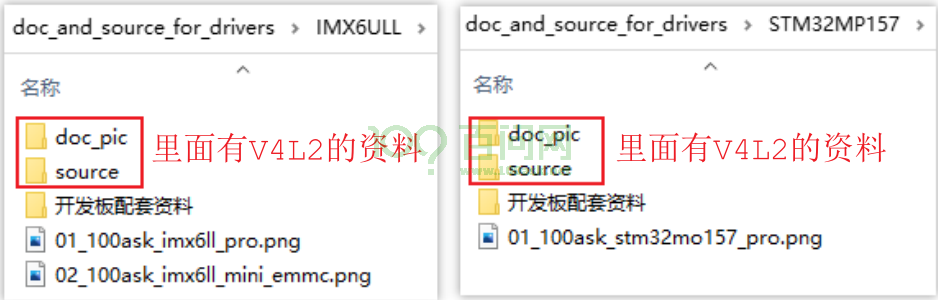
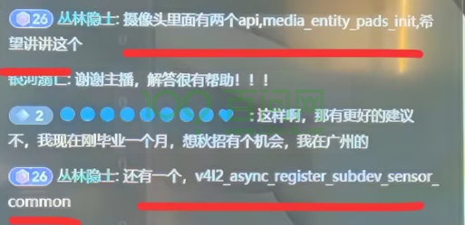
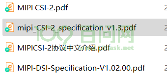

06_V4L2视频介绍及资料下载/笔记#
1. 资料下载#
GIT仓库：
https://e.coding.net/weidongshan/projects/doc_and_source_for_projects.git
注意：上述链接无法用浏览器打开，必须使用GIT命令来克隆。
GIT简明教程：http://download.100ask.org/tools/Software/git/how_to_use_git.html
下载到GIT仓库后，V4L2资料在里面：

2. 收到的建议#
ov13850在驱动中为啥要也要注册notified，同主设备注册的notified有啥区别？这块帮忙讲讲

subdev, media control, media framework, vb2 buffer的分配，怎么轮转，怎么跟硬件打交道，然后图像给应用层用
有的摄像头有控制接口iic,spi，还有没有控制接口的，我们怎么处理？
串行和解串包括cphy和dphy
现在sensor一般都是mipi输出（iic做控制），丢到ISP，ISP处理完了就拿到一帧数据，后面还可能有裁剪和编码等。@韦东山 会有ISP部分讲解吗？最终视频输出是屏幕还是通过网络做IPC或者USB做UVC?
MIPI资料网上也挺多的啊，把协议啃一啃
https://www.mipi.org/

现在汽车上面都是sensor通过串行/解串器，然后通过mipi接口连接到soc
sensor—串行器—GSML—->解串器—->soc（mipi接口）这一条路也涉及一下，自动驾驶基本都涉及这个
3. 学习笔记#
好文：https://zhuanlan.zhihu.com/p/613018868
Linux V4L2子系统分析（一）: https://blog.csdn.net/u011037593/article/details/115415136
Linux V3H 平台开发系列讲解（摄像头）2.1 MAX9296 GMSL链路配置: https://blog.csdn.net/xian18809311584/article/details/131182605
https://github.com/GStreamer/gstreamer
麦兜chenchengwudi@sina.com 14:55:33 我也正在看V4L2，也参考了上面提到的Linux设备驱动开发，还有内核文档，基于5.4内核的，大家可以参考下
麦兜chenchengwudi@sina.com 14:55:42 https://lvxfuhal9l.feishu.cn/docx/Cyssdr8BVonDnnx3YjUc4O9xngg
麦兜chenchengwudi@sina.com 14:55:49 https://lvxfuhal9l.feishu.cn/docx/MYYndrVvPolMA4xhBCNczE4WnWf
麦兜chenchengwudi@sina.com 14:56:32 准备写一组笔记，目前完成了1.5篇
颜色空间总结 https://blog.51cto.com/u_15471597/4927811
https://zhuanlan.zhihu.com/p/159148034
sRGB和RGB的转换
https://www.zhangxinxu.com/wordpress/2017/12/linear-rgb-srgb-js-convert/
YUV(有程序)
https://www.cnblogs.com/a4234613/p/15497724.html
浅谈YUV444、YUV422、YUV420
http://www.pjtime.com/2021/4/192828404475.shtml
YUV与RGB 以及之间的转换
https://blog.csdn.net/WANGYONGZIXUE/article/details/127971015
YUV 4:4:4 每一个Y对应一组UV
YUV 4:2:2 每两个Y共用一组UV
YUV 4:2:0 每四个Y共用一组UV
480i、576i是什么意思？
SDTV、EDTV、HDTV：
SDTV：
采样频率13.5MHz，
每行扫描线包含858个采样点（480i系统）或864个采样点（576i系统）
有效线周期内，都是720个采样点
后来支持16:9宽高比，采样率为18MHz（有效分辨率为960x480i和960x576i），有效线内960个采样点
EDTV
480p、576p
采样频率：4:3宽高比27MHz，16:9宽高比36MHz
HDTV
720p、1080i、1080p
每线的有效采样点数量、每帧的有效线数目：都是恒定的，无论帧率如何
每种帧率都使用不同的采样时钟频率
480i和480p系统
480i属于SDTV
480p属于EDTV
隔行模拟分量视频
每帧525线，有效扫描线为480，在23~262和286~525线上显示有效视频
帧率：29.97Hz（30/1.001）
隔行数字分量视频 *
逐行模拟分量视频
帧率：59.94Hz（60/1.001）
每帧525线，有效扫描线为480，在45~524线上显示有效视频
576i和576p系统
隔行模拟复合视频：单一信号线，每帧625线
隔行模拟分量视频：三种信号线，帧率25Hz，每帧625线，在23~310和336~623线上显示有效视频
逐行模拟分量视频：三种信号，帧率50Hz，每帧625线，在45`620线上显示有效视频
隔行数字分量视频
逐行数字分量视频
SDTV、EDTV、HDTV是数字电视的三种标准，分别是标清电视、增强型标清电视和高清电视。它们的区别在于分辨率、画质和声音的质量。
SDTV（Standard Definition Television）：标清电视，分辨率为720×576或720×480，采用4:3的屏幕比例，通常是普通的电视机或DVD播放机所使用的基本分辨率。在播放高清节目时，会有黑边或画面拉伸等显示不完整的情况。
EDTV（Enhanced Definition Television）：增强型标清电视，分辨率为1280×720或960×540，采用16:9的屏幕比例。比标清电视分辨率更高，但仍不达到高清的标准，适用于播放分辨率较高的电影或游戏。在播放高清节目时，会有黑边或画面拉伸等显示不完整的情况。
HDTV（High Definition Television）：高清电视，分辨率为1920×1080或1280×720，采用16:9的屏幕比例，画面质量高，声音也更为清晰。是当前数字电视的最高标准，适用于播放高清电影、游戏、体育赛事和其他节目。在播放标清节目时，电视会对其进行升频，会用比标清分辨率更高的分辨率去显示，从而提高画质体验。
YUV420P(YU12和YV12)格式 https://blog.csdn.net/lz0499/article/details/101029783
色彩校正中的 gamma 值是什么
https://www.jianshu.com/p/52fc2192ae7b
https://www.zhihu.com/question/27467127
https://blog.csdn.net/weixin_42203498/article/details/126753239
https://blog.csdn.net/m0_61737429/article/details/129782000
https://blog.csdn.net/seiyaaa/article/details/120199720
Linux多媒体子系统01：从用户空间使用V4L2子系统 https://blog.csdn.net/chenchengwudi/article/details/129176862
Video Demystified：
https://www.zhihu.com/column/videodemystified
摄像头：
https://mp.weixin.qq.com/s?__biz=MzUxMjEyNDgyNw==&mid=2247510675&idx=1&sn=66fcc83a95974add9d25a6e9b925c43b&chksm=f96bd867ce1c5171976838ddf995fc6f68e7e839c797bfa6f690c94b577d359939ad1a816cd1&cur_album_id=2583789151490113538&scene=189#wechat_redirect
UI 设计知识库 [01] 色彩 · 理论 https://www.jianshu.com/p/34e9660f00f4
UI 设计知识库 [02] 色彩 · 理论 – 常见问题 https://www.jianshu.com/p/7f652ae75142
UI 设计知识库 [03] 色彩 · 配色 https://www.jianshu.com/p/b56acefc66ed
sRGB https://en.wikipedia.org/wiki/SRGB https://zh.wikipedia.org/wiki/SRGB%E8%89%B2%E5%BD%A9%E7%A9%BA%E9%97%B4
色彩空间是什么？ https://www.pantonecn.com/articles/technical/what-are-your-color-spaces
Gamma、Linear、sRGB 和Unity Color Space，你真懂了吗？ https://zhuanlan.zhihu.com/p/66558476
https://baike.baidu.com/tashuo/browse/content?id=9167c87c2cd4f1c2f4d1c173&lemmaId=2147136&fromLemmaModule=pcRight
A Standard Default Color Space for the Internet - sRGB https://www.w3.org/Graphics/Color/sRGB
术语：
colorspace： SMPTE-170M、 REC-709 (CEA-861 timings) 、 sRGB (VESA DMT timings)
NTSC TV 、PAL
HDMI EDID
progressive、interlaced、
HDMI、webcam TV、S-Video
S-Video and TV inputs
Y’CbCr、RGB、
YUYV 4:4:4, 4:2:2 and 4:2:0
V4L2 capture overlay
4. videobuffer2#
参考资料：
https://www.linuxtv.org/downloads/v4l-dvb-apis-new/
https://www.linuxtv.org/downloads/v4l-dvb-apis-old/vidioc-create-bufs.html
3种buffer：https://www.linuxtv.org/downloads/v4l-dvb-apis-old/index.html
https://www.linuxtv.org/downloads/v4l-dvb-apis-old/buffer.html#v4l2-memory
https://www.linuxtv.org/downloads/v4l-dvb-apis-old/mmap.html
https://www.linuxtv.org/downloads/v4l-dvb-apis-old/userp.html
https://www.linuxtv.org/downloads/v4l-dvb-apis-old/dmabuf.html
https://www.linuxtv.org/downloads/v4l-dvb-apis-old/vidioc-expbuf.html
基于Streaming I/O的V4L2设备使用： https://blog.csdn.net/coroutines/article/details/70141086
https://www.linuxtv.org/downloads/v4l-dvb-apis-old/mmap.html
V4l2应用框架-Videobuf2数据结构 https://blog.csdn.net/weixin_42581177/article/details/126582465
user ptr：https://github.com/h4tr3d/v4l2-capture-complex/blob/master/main.cpp
static const struct vb2_ops airspy_vb2_ops = {
.queue_setup = airspy_queue_setup,
.buf_queue = airspy_buf_queue,
.start_streaming = airspy_start_streaming,
.stop_streaming = airspy_stop_streaming,
.wait_prepare = vb2_ops_wait_prepare,
.wait_finish = vb2_ops_wait_finish,
};
const struct vb2_mem_ops vb2_vmalloc_memops = {
.alloc = vb2_vmalloc_alloc,
.put = vb2_vmalloc_put,
.get_userptr = vb2_vmalloc_get_userptr,
.put_userptr = vb2_vmalloc_put_userptr,
#ifdef CONFIG_HAS_DMA
.get_dmabuf = vb2_vmalloc_get_dmabuf,
#endif
.map_dmabuf = vb2_vmalloc_map_dmabuf,
.unmap_dmabuf = vb2_vmalloc_unmap_dmabuf,
.attach_dmabuf = vb2_vmalloc_attach_dmabuf,
.detach_dmabuf = vb2_vmalloc_detach_dmabuf,
.vaddr = vb2_vmalloc_vaddr,
.mmap = vb2_vmalloc_mmap,
.num_users = vb2_vmalloc_num_users,
};
s->vb_queue.ops = &airspy_vb2_ops; // call_qop,call_vb_qop
s->vb_queue.mem_ops = &vb2_vmalloc_memops; // call_ptr_memop
int vb2_queue_init(struct vb2_queue *q)
q->buf_ops = &v4l2_buf_ops;
4.1 APP request buf#
ioctl(fd, VIDIOC_REQBUFS, &rb);
--------------------------------
v4l_reqbufs(const struct v4l2_ioctl_ops *ops,
ops->vidioc_reqbufs(file, fh, p);
vb2_ioctl_reqbufs
res = vb2_core_reqbufs(vdev->queue, p->memory, &p->count);
num_buffers = min_t(unsigned int, *count, VB2_MAX_FRAME);
num_buffers = max_t(unsigned int, num_buffers, q->min_buffers_needed);
// 给你机会修改num_buffers,num_planes
ret = call_qop(q, queue_setup, q, &num_buffers, &num_planes, plane_sizes, q->alloc_devs); // airspy_queue_setup
/* Finally, allocate buffers and video memory */
allocated_buffers =
__vb2_queue_alloc(q, memory, num_buffers, num_planes, plane_sizes);
ret = __vb2_buf_mem_alloc(vb);
call_ptr_memop(vb, alloc,
vb2_queue->mem_ops->alloc
vb2_vmalloc_alloc
buf->vaddr = vmalloc_user(buf->size);
ret = call_vb_qop(vb, buf_init, vb);
4.2 queue buffer#
queue buffer关键点：
VB2的链表：list_add_tail(&vb->queued_entry, &q->queued_list);
驱动自己维护的链表：list_add_tail(&buf->list, &s->queued_bufs);
驱动的URB传输完成后：
从链表queued_bufs取出buffer
把URB得到的数据填入buffer
调用vb2_buffer_done：list_add_tail(&vb->done_entry, &q->done_list);
dequeue buffer关键点：
从链表done_entry取出并移除第1个vb
把它也从queued_list中移除
ioctl(fd, VIDIOC_QBUF, &buf)
-------------------------------
v4l_qbuf
ops->vidioc_qbuf(file, fh, p);
vb2_ioctl_qbuf
vb2_qbuf(vdev->queue, p);
vb2_queue_or_prepare_buf(q, b, "qbuf");
vb2_core_qbuf(q, b->index, b);
list_add_tail(&vb->queued_entry, &q->queued_list);
vb->state = VB2_BUF_STATE_QUEUED;
/*
* If already streaming, give the buffer to driver for processing.
* If not, the buffer will be given to driver on next streamon.
*/
if (q->start_streaming_called)
__enqueue_in_driver(vb);
/* sync buffers */
for (plane = 0; plane < vb->num_planes; ++plane)
call_void_memop(vb, prepare, vb->planes[plane].mem_priv);
call_void_vb_qop(vb, buf_queue, vb);
airspy_buf_queue
list_add_tail(&buf->list, &s->queued_bufs);
if (pb)
call_void_bufop(q, fill_user_buffer, vb, pb);
4.3 dequeue buf#
ioctl(fd, VIDIOC_DQBUF, &buf)
----------------------------------
v4l_dqbuf
ops->vidioc_dqbuf(file, fh, p);
vb2_ioctl_dqbuf
vb2_dqbuf(vdev->queue, p, file->f_flags & O_NONBLOCK);
ret = vb2_core_dqbuf(q, NULL, b, nonblocking);
ret = __vb2_get_done_vb(q, &vb, pb, nonblocking);
*vb = list_first_entry(&q->done_list, struct vb2_buffer, done_entry);
list_del(&(*vb)->done_entry);
call_void_vb_qop(vb, buf_finish, vb);
call_void_bufop(q, fill_user_buffer, vb, pb);
__vb2_dqbuf(vb);
4.3 stream on#
ioctl(fd, VIDIOC_STREAMON, &type)
------------------------------------
v4l_streamon
ops->vidioc_streamon(file, fh, *(unsigned int *)arg)
vb2_ioctl_streamon
vb2_streamon(vdev->queue, i);
vb2_core_streamon(q, type);
ret = vb2_start_streaming(q);
/*
* If any buffers were queued before streamon,
* we can now pass them to driver for processing.
*/
list_for_each_entry(vb, &q->queued_list, queued_entry)
__enqueue_in_driver(vb);
/* sync buffers */
for (plane = 0; plane < vb->num_planes; ++plane)
call_void_memop(vb, prepare, vb->planes[plane].mem_priv);
call_void_vb_qop(vb, buf_queue, vb);
airspy_buf_queue
/* Tell the driver to start streaming */
q->start_streaming_called = 1;
ret = call_qop(q, start_streaming, q, atomic_read(&q->owned_by_drv_count));
airspy_start_streaming // 分配提交URB
4.3 stream off#
ioctl(fd, VIDIOC_STREAMOFF, &type)
-----------------------------------
v4l_streamoff
ops->vidioc_streamoff(file, fh, *(unsigned int *)arg);
vb2_ioctl_streamoff
vb2_streamoff(vdev->queue, i);
vb2_core_streamoff(q, type);
__vb2_queue_cancel(q);
call_void_qop(q, stop_streaming, q);
airspy_stop_streaming // kill URB
call_void_vb_qop(vb, buf_finish, vb);
4.4 阻塞与唤醒#
4.4.1 阻塞#
memset(fds, 0, sizeof(fds));
fds[0].fd = fd;
fds[0].events = POLLIN;
if (1 == poll(fds, 1, -1))
--------------------------------------
v4l2_poll
res = vdev->fops->poll(filp, poll);
vb2_fop_poll
res = vb2_poll(vdev->queue, file, wait);
vb2_core_poll(q, file, wait);
poll_wait(file, &q->done_wq, wait);
4.4.2 唤醒#
airspy_urb_complete
vb2_buffer_done(&fbuf->vb.vb2_buf, VB2_BUF_STATE_DONE);
4.6 读写buf#
4.7 vidioc_prepare_buf#
v4l2_ioctl_ops.vidioc_prepare_buf
vb2_ioctl_prepare_buf
vb2_prepare_buf(vdev->queue, p);
vb2_core_prepare_buf(q, b->index, b)
call_void_bufop(q, fill_user_buffer, vb, pb);
__fill_v4l2_buffer
/**
* __fill_v4l2_buffer() - fill in a struct v4l2_buffer with information to be
* returned to userspace
*/